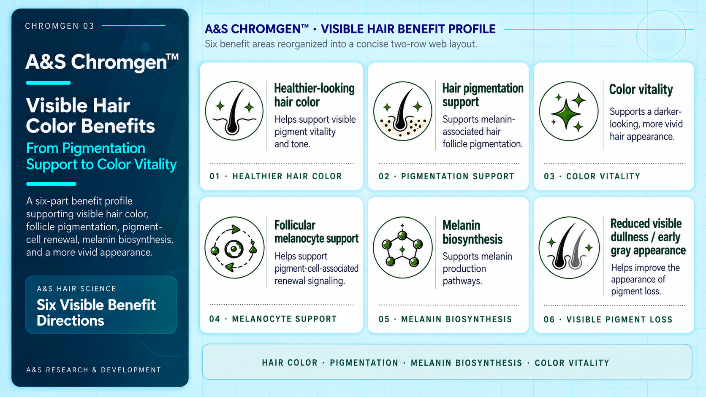
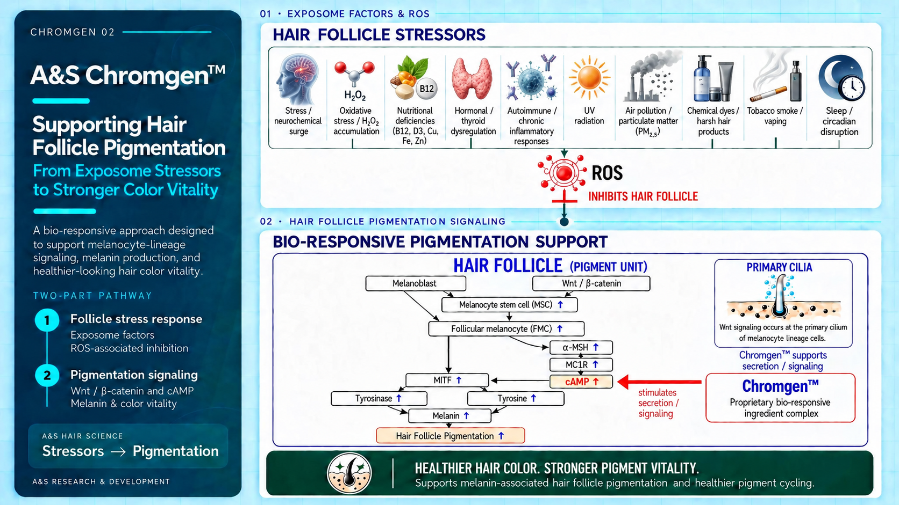

Healthier-looking
hair color
Helps support visible pigment vitality and tone.
Chromgen 02
Supporting Hair
Follicle Pigmentation
From Exposome Stressors
to Stronger Color Vitality
A bio-responsive approach designed to support melanocyte-lineage signaling, melanin production, and healthier-looking hair color vitality.
Two-part pathway
Exposome factors
ROS-associated inhibition
Wnt / β-catenin and cAMP
Melanin & color vitality
A&S Hair Science
Stressors PigmentationA&S Research & Development

Stress /
neurochemical surge
Oxidative stress / H2O2 accumulation
Nutritional deficiencies
(B12, D3, Cu, Fe, Zn)
Hormonal / thyroid dysregulation
Autoimmune / chronic inflammatory responses
UV
radiation
Air pollution / particulate matter
(PM2.5)
Chemical dyes / harsh hair products
Tobacco smoke / vaping
Sleep / circadian disruption
Inhibits hair follicle
Scroll horizontally to explore the full signaling pathway.
Melanoblast and Wnt / beta-catenin signaling connect to melanocyte stem cells and follicular melanocytes. Follicular melanocytes connect to MITF and the alpha-MSH / MC1R / cAMP pathway. Chromgen supports secretion and signaling toward cAMP, which connects to MITF. MITF branches to tyrosinase and tyrosine, both connecting to melanin and then hair follicle pigmentation. The primary cilium is shown as a site of Wnt signaling.
ChromgenTM supports
secretion / signaling
Proprietary bio-responsive
ingredient complex
stimulates
secretion /
signaling
Supports melanin-associated hair follicle pigmentation and healthier pigment cycling.
Chromgen 03
Visible Hair
Color Benefits
From Pigmentation
Support to Color Vitality
A six-part benefit profile supporting visible hair color, follicle pigmentation, pigment-cell renewal, melanin biosynthesis, and a more vivid appearance.
A&S Hair Science
Six Visible BenefitA&S Research & Development
Six benefit areas reorganized into a concise two-row web layout.

Helps support visible pigment vitality and tone.
Supports melanin-associated hair follicle pigmentation.
Supports a darker-looking, more vivid hair appearance.
Helps support pigment-cell-associated renewal signaling.
Supports melanin production pathways.
Helps improve the appearance of pigment loss.
Hair Color · Pigmentation · Melanin Biosynthesis · Color Vitality